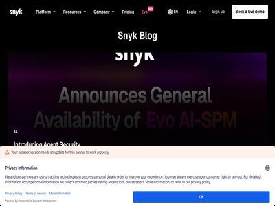

November 26, 2026 · 26 articles

SYS010 malware abuses browser management to spy on Gmail, Outlook
November 26, 2026
A new version of the SYS01 infostealer malware delivered through Meta ads is enrolling browsers into enterprise-style management to force the installation of an extension that s... (BleepingComputer)

Mitel MiCollab Zero-Days Exploited in Suspected AI-Assisted Attacks
November 26, 2026
Accenture says hackers exploited MiCollab flaws before Mitel’s advisory, likely aided by AI, in a suspected extortion campaign. The post Mitel MiCollab Zero-Days Exploited in Su... (SecurityWeek)

UK Border System Helios Lacked an Effective Way to Correct Records: Home Office Reprimanded
November 26, 2026
When the UK's Helios border system went live, frontline staff lacked a proper process for getting inaccurate personal data corrected. The ICO found that the Home Office had brea... (Joho no Todai)
JetBrains Releases Java4Shell (CVE-2026-114938) Fixes; Development JDKs Need Separate Mitigation
November 26, 2026
JetBrains has urged users to update IntelliJ IDEA, PyCharm, and other products. The updates address a vulnerability in the Java runtime bundled with its IDEs, while JDKs used fo... (Joho no Todai)

US agency tracking money laundering is latest casualty in string of federal breaches
November 26, 2026
An intrusion at the US Treasury’s Financial Crimes Enforcement Network (FinCEN) has forced the agency to take some systems offline and extend reporting deadlines for financial i... (Help Net Security)

Chinese, North Korean Hackers Adopt ARTEX AI Offensive Framework
November 26, 2026
Microsoft has confirmed nation-state actors’ deployment of the ARTEX in their tooling, while the CSA described the emergence of the tool as part of a “third wave” of AI-driven t... (Infosecurity Magazine)

Most Wanted: The Phishing Kits and Techniques Getting Past Security Controls
November 26, 2026
Every phishing attack has to get past email security, web filtering, and safe browsing before it reaches an employee. Some kits manage that far more often than others, and those... (The Hacker News)
1Password Hacked, Customer Data and Source Code Stolen in GitHub Account Breach
November 26, 2026
Popular password management software 1Password on Wednesday disclosed a security incident involving its backend systems that led to the unauthorized access of some customer info... (The Hacker News)
Data recovery firm co-founder accused of cashing in on ransomware victims
November 26, 2026
The co-founder of a Florida data recovery firm has been indicted on charges that he secretly paid ransomware gangs while telling victims his company never did. Juan Ricardo Pala... (Help Net Security)
BeeStation OS 1.5.6-68000 Fixes Critical Vulnerabilities; Users Should Check Update Status
November 26, 2026
Synology has released BeeStation OS 1.5.6-68000 in stages. The update fixes vulnerabilities that could allow unauthorized file access or disrupt services, so users should confir... (Joho no Todai)
Critical Apache Tomcat CVE-2026-133325 Flaw Affects Cluster TLS-PSK Authentication; TLS 1.2 Recommended
November 26, 2026
An authentication flaw has been found in Apache Tomcat cluster communications using TLS 1.3 and a pre-shared key. No fixed release was available as of November 26, and the devel... (Joho no Todai)
Drupal Installer Patch Left a Gap Attackers Are Already Exploiting
November 26, 2026
Drupal warns that its previous installer patch left some websites vulnerable to takeover, with attackers already exploiting the gap. The post Drupal Installer Patch Left a Gap A... (SecurityWeek)

Cyprus Becomes Espionage Target for Iranian Hackers
November 26, 2026
A previously undocumented Iranian threat group called "Volant Manticore" is targeting Cypriot organizations as part of an intelligence-gathering effort for Tehran. (Dark Reading)
Drupal Warns of New Highly Critical Site Takeover Vulnerability Under Active Exploitation
November 26, 2026
Drupal has warned of a new "highly critical" security flaw impacting Drupal core that it said has been exploited in the wild. The vulnerability, tracked as CVE-2026-136716 (CVSS... (The Hacker News)
Black Friday cybersecurity deals 2026: Stay safe, spend less
November 26, 2026
Black Friday is here again, and for once your inbox full of “limited time offer” emails might be worth opening. Every year, security vendors join the sales rush with discounts o... (Help Net Security)
Proxmox 9.3 adds production snapshots for SAN-backed VMs
November 26, 2026
Proxmox Virtual Environment 9.3 adds production support for snapshots on shared LVM storage over iSCSI and Fibre Channel SANs. The open-source virtualization platform also gives... (Help Net Security)
More than 4,400 malicious domains are waiting for holiday shoppers
November 26, 2026
Cybercriminals are positioned to exploit the holiday shopping season through fraudulent storefronts, retailer impersonation, payment fraud and account takeover attacks, accordin... (Help Net Security)

What Two Million Canary Prompts Reveal About AI Supply Chain Security
November 26, 2026
Executive Summary To evaluate the security of the AI supply chain, Dragos seeded approximately two million AI prompts with canary URLs and credentials. The investigation reveale... (Qualys Blog)
Google mandates MCP or CLI access for Workspace AI agents starting February 2027
November 26, 2026
Google has announced security controls across Google Workspace and Google Cloud to address the risks associated with autonomous AI agents accessing enterprise data, executing ta... (Help Net Security)
People are willing to pay to vanish from search results
November 26, 2026
More than half of U.S. adults would like to see a log of everyone who has searched for their name online. In a survey of 1,008 adults by Incogni, 53% said they would like that r... (Help Net Security)
13 Malicious NuGet Packages Turn Fake.NET Job Assessments Into Malware Delivery Traps
November 26, 2026
Cybersecurity researchers have discovered 13 malicious NuGet packages that are designed to target Windows .NET developers under the guise of a fake take-home job assessment. "Mo... (The Hacker News)

Introducing Wiz ADR: Strengthening Cloud and AI Detection and Response with Application Context
November 26, 2026
See which functions in your code triggered a runtime alert, use agentic investigation to cut false positives, and automate response down to the exact file and line to fix. (Wiz Blog)

Srsly Risky Biz: America Needs Homegrown Open-Weight Models
November 26, 2026
Your weekly dose of Seriously Risky Business news is written by Tom Uren and edited by Patrick Gray and Amberleigh Jack. This week's edition is sponsored by Ent AI . You can hea... (Risky Business News)
A Feast for AI: What Wiz Agents are Thankful For
November 26, 2026
Grab a slice of Data Pie and pull up a chair. Here’s how Wiz’s Red, Green, and Blue Agents celebrate a quieter, smarter security season. (Wiz Blog)
Windows Update Reoffers Intel NUC Driver 1.0.0.38 After Removal Following WinRing0 Detection
November 26, 2026
Testing on an 11th-generation Intel NUC found Microsoft Defender detecting a vulnerable driver. Even after the related package was removed, Windows Update offered the same versi... (Joho no Todai)

Make post-quantum cryptography updates routine with AWS-LC
November 26, 2026
As your organization plans upgrades to post-quantum cryptography (PQC), you should also think about cryptographic agility to more easily update algorithms used to protect your d... (AWS Security Blog)
November 25, 2026 · 69 articles
Italy and Switzerland warn of autonomous AI-driven cyberattacks
November 25, 2026
Swiss and Italian cybersecurity agencies are warning about automated cyberattacks powered by AI agents targeting organizations in the critical infrastructure sector. [...] (BleepingComputer)

Microsoft named a Leader in the 2026 Gartner® Magic Quadrant™ for Email Security
November 25, 2026
We're honored to share that Microsoft has been named a Leader in the 2026 Gartner® Magic Quadrant™ for Email Security, for the second consecutive year. The post Microsoft named... (Microsoft Security Blog)

CVE-2026-136267 - Improper neutralization of special elements used in an OS command in Kiro Web
November 25, 2026
Bulletin ID: 2026-202-AWS Publication Date: 11/25/2026 09:00 AM PST Description: Kiro Web is a cloud-hosted, AI-powered integrated development environment where subscribers use... (AWS Security Bulletins)
CISA warns of critical unpatched flaw in Danfoss refrigeration controllers
November 25, 2026
The U.S. Cybersecurity and Infrastructure Security Agency (CISA) is warning about a critical vulnerability in Danfoss AK-SM 8xxA Series controllers used by food retailers to man... (BleepingComputer)

Your AI Coding Agent Just Leaked a Secret. Bots Found It on Docker Hub in 8 Seconds
November 25, 2026
Bots used AWS keys planted in Docker Hub images within 7.86 seconds. AI coding agent config files are now carrying real secrets into those same layers, because .gitignore does n... (GitGuardian Blog)
InfraTrust warns of exploited supply chain flaws in network appliances
November 25, 2026
Eclypsium's November InfraTrust report warns that most infrastructure security advisories addressing exploited vulnerabilities over the past month involve flaws in third-party s... (BleepingComputer)
Shufti Fraud Hub exposes suspicious links between seemingly legitimate accounts
November 25, 2026
Shufti has announced the launch of its Fraud Hub, a connected fraud intelligence layer designed to detect suspicious verification attempts, identify coordinated fraud networks a... (Help Net Security)

Gatwick drop-off customers' personal data exposed in supplier breach
November 25, 2026
AutoPay login and vehicle records affected, alongside limited payment information and customer service emails (The Register - Security)

GT13: AI-Assisted Hackers Target 22 Organizations Through Check Point Servers
November 25, 2026
GreyNoise tracks GT13, an unattributed, probably AI-assisted campaign that hit 22 organizations via Check Point management servers. It may still be running. GreyNoise detailed a... (Security Affairs)
Plagiarism Checker Turnitin Investigating Cyberattack
November 25, 2026
The edtech company says the systems are fully operational and safe to use while it investigates the incident. The post Plagiarism Checker Turnitin Investigating Cyberattack appe... (SecurityWeek)
Hackers now exploit critical Drupal RCE flaw to hijack sites
November 25, 2026
The Drupal security team has confirmed that a critical vulnerability that lets attackers hijack unpatched sites has been actively exploited since at least Thursday. [...] (BleepingComputer)
NCSC Shares Guidance to Tackle Agentic Threat From ARTEX-Like Tools
November 25, 2026
UK’s National Cyber Security Centre urges “strong operational discipline” to manage agentic offensive frameworks (Infosecurity Magazine)
Hackers Exploited CVSS 10.0 Hex.pm RCE Flaw to Compromise 6 Package Registry Servers
November 25, 2026
An attacker ran operating system commands on Monday on six production servers of Hex.pm, the package registry that Elixir and Erlang developers fetch their dependencies from. Th... (The Hacker News)
Palo Alto Networks Patches Fragnesia Flaw Used to Root Firewalls
November 25, 2026
A China-linked hacking group chained PHP2Shell with Fragnesia in AI-assisted attacks that hit 25 servers. The post Palo Alto Networks Patches Fragnesia Flaw Used to Root Firewal... (SecurityWeek)

Securing Employees’ AI Use Requires a Unified Architecture
November 25, 2026
(CrowdStrike Blog)

Three Attacks, Zero Exploits in Microsoft 365
November 25, 2026
Learn how three real-world attacks turn ordinary user actions into full Microsoft 365 compromise, and what to fix before they land in your inbox. (Huntress Blog)
ICYMI: October 2026 @AWS Security
November 25, 2026
Welcome to this month’s AWS Security news! Organizations need current information about AWS Security developments to maintain their cloud security. This monthly digest covers ke... (AWS Security Blog)

PolinRider Malware Force-Pushed Into AsyncAPI, CircuitVerse and Open Food Facts Pull Requests
November 25, 2026
PolinRider malware was force-pushed into AsyncAPI, CircuitVerse and Open Food Facts pull requests and ran in CircuitVerse's release CI. How it works, IOCs, and how to check your... (StepSecurity Blog)

Microsoft: China’s Salt Typhoon hackers are using Artex
November 25, 2026
An AI tool implicated in several high-profile breaches is rapidly being integrated into the hacking suites of groups from China and North Korea, Microsoft said. (The Record)
Secure agentic access to AWS with Enterprise-Managed Authorization
November 25, 2026
AWS Sign-In is introducing support for Enterprise-Managed Authorization (EMA) using the Identity Assertion JWT Authorization Grant (ID-JAG), enabling organizations to securely a... (AWS Security Blog)
FIFA says hackers accessed ‘limited set of personal and business information’
November 25, 2026
The Switzerland-based international governing body for soccer says it's working with relevant authorities and law enforcement to investigate a recent breach. (The Record)
Reduce operational overhead by migrating from AWS CloudHSM to AWS KMS
November 25, 2026
AWS Key Management Service (AWS KMS) supports the security certifications, algorithms, and performance that most AWS CloudHSM workloads require. Organizations that migrate from... (AWS Security Blog)
The security of US water systems is even leakier than we thought
November 25, 2026
And intruders don't always need to exploit bugs to break in (The Register - Security)

Oh, is it Thanksgiving? I hadn’t noticed!
November 25, 2026
In true Thanksgiving fashion, David has a few thank-yous to give to the cybersecurity community (and a few choice words for threat actors). (Cisco Talos)
Planning for 99.99 percent availability with the Amazon Cognito Plus feature plan
November 25, 2026
Amazon Cognito handles sign-in and access control for users, AI agents, and microservices with managed user directories, social and enterprise federation, and passwordless sign-... (AWS Security Blog)
Australia passes tough legislation requiring big tech to preempt foreseeable harms
November 25, 2026
The Digital Duty of Care Act sailed through Australia's Parliament. It will mandate that online providers establish protocols to protect users from threats of violence and rape... (The Record)
Microsoft's NTLM security changes trip up third-party logins
November 25, 2026
It's not our fault if you've implemented it wrong (The Register - Security)
Microsoft confirms authentication issues after November updates
November 25, 2026
Microsoft has confirmed that customers may experience authentication issues after installing November security updates that address a high-severity remote code execution vulnera... (BleepingComputer)
US Anti-Scam Surge Hits 800 Defendants and 29 Scam Compounds
November 25, 2026
DOJ's anti-scam surge has targeted over 800 defendants while the FBI has hit over 29 scam compounds (Infosecurity Magazine)
Attackers Target.NET Developers With Poisoned Job Assessments
November 25, 2026
Researchers discovered 13 malicious NuGet packages as part of a fake recruitment campaign that spreads malware and gives attackers access to developers' machines. (Dark Reading)
Two Newly Disclosed GeoServer Vulnerabilities Under Attack
November 25, 2026
Attackers are probing GeoServer instances for two high-severity flaws that can be chained with other bugs for unauthenticated RCE. The post Two Newly Disclosed GeoServer Vulnera... (SecurityWeek)
It's a Bot World. We're Just Living in It
November 25, 2026
Bot detection has become a losing game. Security teams need to limit privileged access for humans and their machine counterparts equally. (Dark Reading)
More Pentests Without More Pentesters: Where AI Safely Helps
November 25, 2026
Penetration testers spend a significant portion of their engagements on documentation, reporting, and other tasks outside of testing. PentestPad explains how AI can reduce this... (BleepingComputer)

The AI Threat Horizon: Why Speed, Edge AI and Baselines Are Our Best Defense
November 25, 2026
Unit 42 examines the evolution of AI-driven cyberattacks and outlines proactive defense strategies for security teams. The post The AI Threat Horizon: Why Speed, Edge AI and Bas... (Palo Alto Networks Unit 42)
Cyber Insurers See New Divide: AI Defense 'Haves' & 'Have Nots'
November 25, 2026
Dark Reading Confidential Episode 23: Cyber insurers share their view of the AI-driven threat landscape and how mounting challenges are putting pressure on both sides of the pol... (Dark Reading)

AI agents found an unpatched flaw after being told to “break in”
November 25, 2026
AI agents discovered a previously unknown vulnerability and later used it to take control of a university server. (Malwarebytes Labs)
ShinyHunters Claims Comeback, New Inception Group Rejects Alleged Ties
November 25, 2026
An account tied to ShinyHunters announced the group’s return, as Okta spots possible links between Inception and ShinyHunters hackers. The post ShinyHunters Claims Comeback, New... (SecurityWeek)

Introducing Search for Agents
November 25, 2026
Flip one toggle to make your site searchable by AI agents - complete with automatic content indexing, a discoverable search API, and native HTTP QUERY support. (Cloudflare Blog)

Our 2026 Cybersecurity Predictions: What We Got Right, What We Got Wrong, and What Changed
November 25, 2026
Rapid7’s annual Security Predictions webinar returns on December 10, bringing our experts together to explore what the year ahead could hold for cybersecurity. Before sharing ou... (Rapid7 Blog)
Ground Truth: CISO Matt Martin on Building a Real Security Program Without an Enterprise Budget
November 25, 2026
Matthew Martin is Chief Information Security and Privacy Officer at Western Carolina University. The post Ground Truth: CISO Matt Martin on Building a Real Security Program With... (SecurityWeek)
Suspected ransomware attack disrupts cancer treatments, surgeries at Guadeloupe hospital
November 25, 2026
France’s national cybersecurity agency is investigating a suspected ransomware attack that impaired the computer systems of the University Hospital of Guadeloupe, forcing doctor... (The Record)
Never Let the Model See the Secret: Zero Data Retention Is Not Enough
November 25, 2026
Nearly 2 million bait prompts. Three breached AI providers. Stolen AWS keys tested within hours. Dragos showed that Zero Data Retention is a promise, not a control. Here is how... (GitGuardian Blog)
Rackspace Spot to Shut Down December 8 After Security Breach
November 25, 2026
US cloud provider Rackspace is shutting down Rackspace Spot. Running workloads are scheduled to stop at 5:00 p.m. CST on December 8, and users need to retrieve and migrate their... (Joho no Todai)

How AI App Builders Leak Their Own Credentials
November 25, 2026
Executive summary: AI app builders give generated apps owner-level access The Orca Research Pod found the same architectural mistake in multiple independent AI app builder platf... (Orca Security Blog)
Electrolux Smart Boilers in Ukraine Connect to Russian Servers, Raising Privacy Concerns
November 25, 2026
Researchers found Electrolux-branded smart boilers connecting to Russian servers, raising concerns about household data and privacy. A router in Ukraine recorded a water heater... (Security Affairs)
Hackers Exploit Two GeoServer Flaws as Researchers Warn of Unauthenticated RCE Chains
November 25, 2026
Threat actors are actively exploiting two newly patched security flaws in GeoServer, according to watchTowr. The vulnerabilities in question are CVE-2026-120705 and CVE-2026-129... (The Hacker News)
Thunderbird 161.0 Fixes CVE-2026-136226 Sender Spoofing in OpenPGP-Signed Email
November 25, 2026
Thunderbird 161.0 and extended-support release 153.8.0 ESR are now available. They fix a critical flaw that could cause a mismatch between the sender covered by OpenPGP signatur... (Joho no Todai)
Two exposed databases held over 3.5 billion records
November 25, 2026
Researchers found stolen passwords, session cookies and children's school records sitting in two open databases. (Malwarebytes Labs)

Tracking Incidents of Hacking Using AI Tools
November 25, 2026
Daniel Meissler is tracking incidents of AI-enhanced hacking, and the offensive harnesses the hackers are using. (Schneier on Security)
Credential Remediation Is Slow When You Don’t Know What Will Break
November 25, 2026
TL;DR More than 64% still valid after four years: GitGuardian’s State of Secrets Sprawl 2026 found that most valid secrets discovered in 2022 still worked in January 2026, becau... (The Hacker News)
Securing Grandma's groceries with Pierre Cadieux
November 25, 2026
Pierre takes us back to his early days on help desks in the 90s, where learning to correlate logs between Windows and Unix systems sparked the curiosity that eventually led him... (Cisco Talos)
Ransomware Attacks Surge 23% in October Following Record Quarter
November 25, 2026
The continued rise in ransomware attacks may reflect a new cyber environment, NCC Group researchers have warned (Infosecurity Magazine)
Ex-OpenAI Employee Accused of Bugging Company Offices Granted $1 Million Bail
November 25, 2026
A former OpenAI employee accused of concealing a covert recording device at the company's San Francisco offices will be allowed to be released from jail on a $1 million bond, a... (The Hacker News)
Australian Digital Duty of Care Bill Passes Both Houses With Global-Revenue-Linked Penalties and Direct Right of Action
November 25, 2026
Australia's Parliament has passed the Digital Duty of Care bill in both houses. The maximum penalty for breaching the duty will be the greater of 5% of a company's global revenu... (Joho no Todai)
UK Authorized Push Payment Losses Surge 22% as Fraudsters Steal £660m
November 25, 2026
Authorized push payment (APP) fraud increased 22% annually in the first half of the year (Infosecurity Magazine)
Anthropic wants to catch rogue AI activity without retaining your data
November 25, 2026
Anthropic has launched a public beta of Enterprise Frontier Safeguards (EFS), enabling organizations to detect potentially harmful AI activity across multiple interactions while... (Help Net Security)
Police disrupt 57 illegal IPTV services and trace €26 million in crypto
November 25, 2026
A crackdown involving police from 11 countries has disrupted 57 illegal IPTV services and identified 321 pirate websites that draw more than 7.3 million visits a year. Europol c... (Help Net Security)
Maritime industry faces growing cyber threats as 50 ships targeted
November 25, 2026
US authorities investigate suspected cyberattacks on up to 50 commercial ships, with Iran and Russia under scrutiny and Fortinet flaws involved. The United States is investigati... (Security Affairs)
Hackers reportedly breached CIA intelligence analysis system
November 25, 2026
Unknown attackers have reportedly breached an open-source intelligence analysis system at the US Central Intelligence Agency (CIA) [...] (BleepingComputer)
Credential harvesting goes from fringe activity to major exploitation trend
November 25, 2026
Requests to steal credentials made up 13% of all vulnerability exploitation recorded between January and November 2026. Their monthly share climbed from about 1% in January to b... (Help Net Security)
WordPress Blocks Six Backdoored WP Connect Plugins Before Malicious Releases Go Live
November 25, 2026
WordPress has removed six WordPress plugins developed by WP Connect after they were backdoored on November 22, 2026, to enable arbitrary code execution on sites that have them i... (The Hacker News)
gputaskman: Open-source task manager for GPUs
November 25, 2026
gputaskman is an open-source task manager for GPUs that runs in a terminal on Windows, Linux, WSL, and Apple Silicon Macs. It shows which process is holding a machine’s GPU memo... (Help Net Security)
This could mess with Thanksgiving, says VMware as it drops third critical patch bundle in a week
November 25, 2026
Four more critical vulns, including another unauthorized access flaw in vCenter (The Register - Security)

BerriAI LiteLLM Guardrail Sandbox Escape RCE
November 25, 2026
What is the Vulnerability? CVE-2026-40217 is a critical arbitrary-code-execution vulnerability in BerriAI LiteLLM, a widely used open-source LLM proxy/gateway. LiteLLM's guardra... (FortiGuard Labs)
Apache Axis RCE in Confluence Data Center & N-able N-central
November 25, 2026
What is the Vulnerability? CVE-2026-90436 is a critical unsafe-reflection vulnerability (CWE-470) in Apache Axis 1.x, the legacy SOAP web-services library. Because Axis instanti... (FortiGuard Labs)

ISC Stormcast For Wednesday, November 25th, 2026 (Wed, Nov 25th)
November 25, 2026
(SANS ISC)
Risky Bulletin: Card stealer found on 80 major US news sites
November 25, 2026
In other news: Cybersecurity firm Radware gets hacked; US investigates Iran over oil tanker hacks; hackers exploit Azure APIM bug to access cloud environments. (Risky Business News)
Introducing context-aware rules for AWS Network Firewall
November 25, 2026
AWS Network Firewall now supports context-aware rules, which match traffic by the AWS resources that send and receive it instead of by IP address. A rule can name a virtual priv... (AWS Security Blog)
Introducing AWS Network Firewall Next Generation policy
November 25, 2026
When it comes to inspecting network traffic, many security teams want two things from a firewall. They want to allow only the traffic each application needs, and they want each... (AWS Security Blog)
November 24, 2026 · 25 articles
New Inception Extortion Brand Tied to SSO Vishing Campaign
November 24, 2026
Okta and ReversingLabs linked Inception to an SSO vishing campaign targeting employee credentials (Infosecurity Magazine)
Rapid7 Analysis: VMware vCenter SRP Authentication Bypass to Root (CVE-2026-123890)
November 24, 2026
Overview An unauthenticated attacker can retrieve the session key for an in-progress administrator login to VMware vCenter's directory service. The attacker then uses that key t... (Rapid7 Blog)

CISA Adds Three Known Exploited Vulnerabilities to Catalog
November 24, 2026
CISA has added three new vulnerabilities to its Known Exploited Vulnerabilities (KEV) Catalog , based on evidence of active exploitation. CVE-2026-131914 Idunno AntiCsrf Deseria... (CISA Current Activity)
European Commission confirms personal data stolen in AI-assisted cyberattack
November 24, 2026
EU Academy names and email addresses exposed, with users warned via website notice rather than contacted directly (The Register - Security)
nginx2root (CVE-2026-123007): HTTP/2 Flaw Lets Attackers Run Code on Unpatched nginx Servers
November 24, 2026
nginx 1.31.9 and 1.30.7 fix an HTTP/2 flaw that a public exploit turns into unauthenticated code execution. See what stopped the exploit in our lab, how to patch and confirm the... (StepSecurity Blog)
Researchers Find a New AI Attack Path: Agent Instructions
November 24, 2026
Ox Security warns that agents are being manipulated without the need for executable malware (Infosecurity Magazine)
OpenAI and Cisco Unveil AI-Assisted Linux Security Tool to Block Exploits Before Patching
November 24, 2026
OpenAI and Cisco have teamed up to launch Shirudo (meaning "shield" in Japanese), an open-source Linux runtime that allows artificial intelligence (AI) agents to defend systems... (The Hacker News)
Orgs that leak data 'prioritize corporate interests over customers' says Have I Been Pwned’s Troy Hunt
November 24, 2026
Leakers move through denial, bargaining, delay, legal threats, then claiming Hunt is the real villain (The Register - Security)

Evo Agentic Development Security and Evo Dependency Firewall Inside NVIDIA OpenShell
November 24, 2026
See how Evo ADS and Dependency Firewall secure Claude Code in NVIDIA OpenShell, from screening agent skills and code to controlling package installs. (Snyk Blog)
Know the identity behind the role: Authorize and audit with trusted identity propagation
November 24, 2026
Today, AWS is making it easier to grant access and audit activity based on the user or workload (a non-human caller, such as an application, service, or an automated workflow) b... (AWS Security Blog)
Cisco and OpenAI pitch eBPF kernel plugins as the way to tame the patchpocalypse
November 24, 2026
‘Shirudo’ project promises to whip up compensating controls in a hurry (The Register - Security)
“Do Good Security” and Other Lessons from Wiz’s FedRAMP VDR & VER Event
November 24, 2026
Key highlights from government leaders, industry experts, and the Wiz FedRAMP team from our November 12th event on modernizing vulnerability management to meet FedRAMP’s new req... (Wiz Blog)
Hackers May Have Breached FBI Database Used by Police Nationwide
November 24, 2026
FBI investigates an apparent breach of its NCIC criminal database, raising concerns over sensitive law enforcement data and security. The FBI is investigating a possible breach... (Security Affairs)
UK cyber agency, threat companies tracking rise in AI-assisted hacks
November 24, 2026
The National Cyber Security Centre said it is observing a “marked” increase in such attacks across sectors, as threat actors increasingly delegate to machines. The post UK cyber... (CyberScoop)
VMware Updates Patch Critical ESX, vCenter Vulnerabilities
November 24, 2026
The critical bugs include an authentication bypass in vCenter and flaws that could allow code execution on ESX hosts. The post VMware Updates Patch Critical ESX, vCenter Vulnera... (SecurityWeek)
An Unclassified CIA System Was Breached in a Cyberattack, AP Source Says
November 24, 2026
It was not clear what specific information was compromised or who was responsible. The post An Unclassified CIA System Was Breached in a Cyberattack, AP Source Says appeared fir... (SecurityWeek)
Satellites Have a Ground-Level Cybersecurity Problem
November 24, 2026
Weaknesses in the ground-based infrastructure supporting satellite services are becoming more consequential as a new space race gathers pace. (Dark Reading)
Unclassified intel system hit by hackers, affecting CIA, ODNI
November 24, 2026
CyberScoop confirmed the incident, with a source saying “no other systems are currently at risk.” The post Unclassified intel system hit by hackers, affecting CIA, ODNI appeared... (CyberScoop)
AWS Network Firewall introduces automated internet firewall mode (Preview)
November 24, 2026
AWS Network Firewall now offers automated internet firewall mode (Preview). In this mode, Network Firewall applies your centrally defined rules to traffic at the internet gatewa... (AWS Security Blog)
Delegate user access to AI agents with Amazon Cognito token exchange
November 24, 2026
Suppose you use a restaurant review app to check reviews, book tables, and email invitations to your friends. With OAuth 2.0, the app sends you to the authorization server that... (AWS Security Blog)

Impact of AI on CVEs: PROTECTION STRATEGIES
November 24, 2026
For enterprise software development operations, AI now handles work that was once too hard or too costly to justify, from reverse engineering and debugging to building fuzzing h... (JFrog Security Research)
Hackers Found a Way Around GitHub SHA Pinning. This Webinar Explains How to Close the Gap
November 24, 2026
Pinning GitHub Actions to an exact version of their code, known as SHA pinning, has become the go-to defense against software supply chain attacks. Attackers have already found... (The Hacker News)
AWS completed its second ISO/IEC 42001:2023 surveillance audit
November 24, 2026
In November 2024, Amazon Web Services (AWS) was the first major cloud service provider to announce the ISO/IEC 42001 accredited certification for AI services, covering Amazon Be... (AWS Security Blog)
Radware discloses breach exposing customer cloud access keys
November 24, 2026
Cybersecurity company Radware says attackers gained access to some of its customers' account details and cloud access keys through an unsecured internal Cloud WAF (Web Applicati... (BleepingComputer)
Lawmakers warn ID verification companies to bolster security after September hack
November 24, 2026
A bicameral, bipartisan letter from lawmakers said identity verification companies still have significant security work to do in the wake of a data breach at IDscan in September. (The Record)